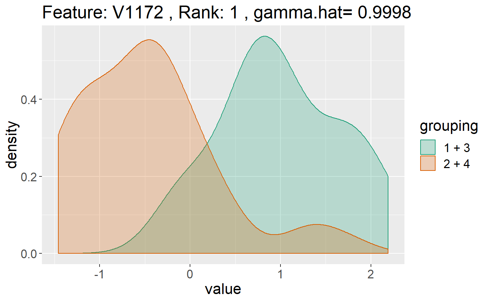
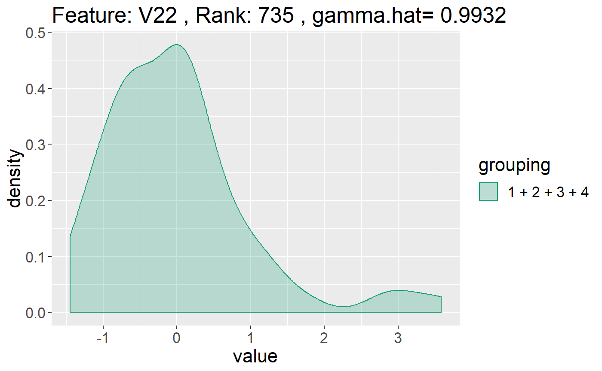

multiDAvignette_caseStudy.RmdOne particular type of data that is well suited for use by multiDA is microarray data. In this example, we demostrate the power of multiDA in predicting cancer type using the provided SRBCT data.
The SRBCT dataset (Khan, 2001) looks at classifying 4 classes of different childhood tumours sharing similar visual features during routine histology. These classes include Ewing’s family of tumours (EWS), neuroblastoma (NB), Burkitt’s lymphoma (BL), and rhabdomyosarcoma (RMS). Data was collected from 63 cDNA microarrays, with 1586 features present after filtering for genes with zero median absolute deviation. The data can be accessed by typing SRBCT. We assign our feature data to X, and our response data to y.
## Length Class Mode
## X 99918 -none- numeric
## y 63 factor numericWe will fit a multiDA model to describe the group structure for each feature.
EBIC penalty as we have much more features than observations.equal.var = TRUE to fit a model which assumes each Gaussian curve has the same variance.set.options = "exhaustive" tells the multiDA algorithm to consider all 15 options of grouping 4 objects together (see What does multiDA actually do? here for describing possible group structures). If the number of classes is much larger, say 5 or 6, the number of groupings grows rapidly (see Bell Number here), and so another set option may be considered to restrict the number of groupings explored.We can explore the results of the multiDA model using the print() function:
## Sample Size:
## [1] 63
## Number of Features:
## [1] 1586
## Classes:
## [1] 4
## Equal Variance Assumption:
## [1] TRUE
## Number of Significant Features:
## [1] 215
## Summary of Significant Features:
## rank feature.ID gamma.hat partition
## 1 1 V1172 0.9997741 8
## 2 2 V1232 0.9997576 4
## 3 3 V1233 0.9997563 3
## 4 4 V1324 0.9997506 3
## 5 5 V706 0.9997441 5
## 6 6 V434 0.9997437 3
## 7 7 V527 0.9997424 3
## 8 8 V1189 0.9997368 3
## 9 9 V1166 0.9997347 7
## 10 10 V148 0.9997342 4
## Partition Matrix:
## [1] "exhaustive"
## [,1] [,2] [,3] [,4] [,5] [,6] [,7] [,8] [,9] [,10] [,11] [,12] [,13]
## [1,] 1 1 1 1 1 1 1 1 1 1 1 1 1
## [2,] 1 1 1 2 2 2 1 2 2 1 2 2 2
## [3,] 1 2 1 1 2 2 2 1 3 2 1 3 2
## [4,] 1 1 2 1 2 1 2 2 1 3 3 2 3
## [,14] [,15]
## [1,] 1 1
## [2,] 2 2
## [3,] 3 3
## [4,] 3 4The key information returned to us is that 215 of the 1586 are deemed significant, with high gamma.hat values inndicating a higher probablity of membership to a particular partitioning. For example, for the most significant feature V1172, there is a 0.999 chance that it is described by partition 8, which, looking at the Partition Matrix output, consists of classes 1 and 3 described by a Gaussian curve, and classes 2 and 4 explained by a Gaussian curve (2 cueves altogether).
A low top value of gamma.hat indicates high uncertainty in model fit even for the most significant features - and in such a case another ML algorithm should be considered.
We can visualise the paritioning of the classes within each feature using the plot() method for multiDA. By default, the plot function plots the top 10 ranked features. If `ranked=FALSE, then the user can specify which features to be plotted (specified by column names).

An example using specified features:

If we want to predict class labels, we can use the predict function in order to do so. In this case, we will find the resubstitution error rate for this dataset using the multiDA algorithm. We can either extract the probability of class membership for each point ($probabilities) or we can directly extract class membership prediction (which class had the max probability) using $y.pred.
## [,1] [,2] [,3] [,4]
## [1,] 1.908807e-135 1 1.336194e-99 2.596398e-68
## [2,] 1.214488e-123 1 3.550677e-80 8.116775e-55
## [3,] 1.530691e-162 1 3.396422e-123 8.374009e-63
## [4,] 1.601513e-108 1 3.320017e-67 3.077376e-35
## [5,] 1.860622e-157 1 7.604828e-114 4.035431e-64
## [6,] 1.469110e-171 1 5.841163e-129 1.691079e-80## [1] 2 2 2 2 2 2
## Levels: 1 2 3 4## [1] 0Tidy functions have been created for ease of use - namely glimpse_multiDA() and tidy_multiDA(), both of which take a trained multiDA object (in this case, res) as function input.
This function returns a one row data frame, with quick summaries from the algorithm. In the spirit of the “glance” function from the broom package.
## Classes Number.of.Partitions Number.of.Signficant.Features Top.Gamma
## 1 4 15 1586 0.9997741This returns a tidy data frame, with key results from the trained multiDA object, namely, a data.frame of significant features and their ranks. In the spirit of “tidy” from the broom package.
## rank feature.ID gamma.hat partition
## 1 1 V1172 0.9997741 8
## 2 2 V1232 0.9997576 4
## 3 3 V1233 0.9997563 3
## 4 4 V1324 0.9997506 3
## 5 5 V706 0.9997441 5
## 6 6 V434 0.9997437 3